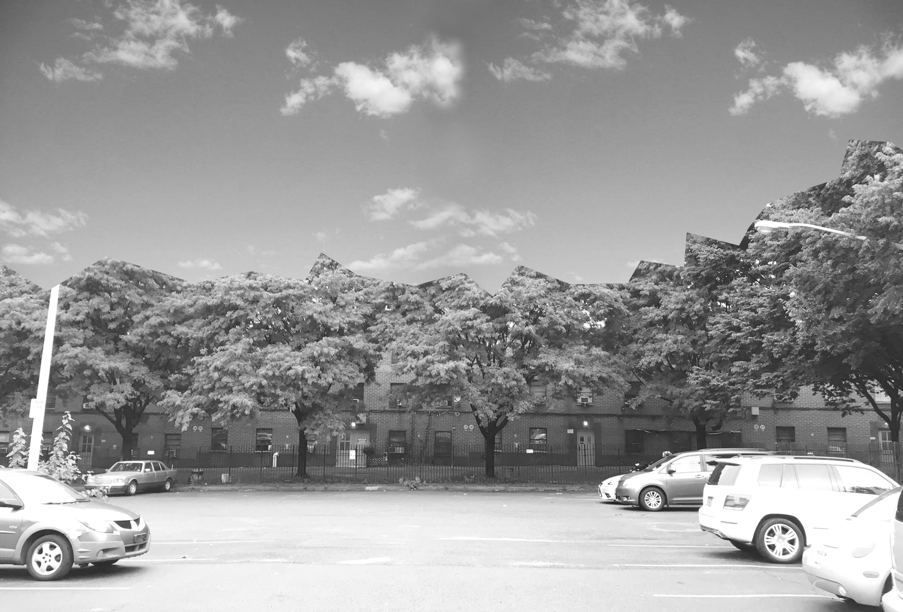

P 003
Low-Income Housing
Driven by the endless building machine of New York’s real estate market, this idea grew out of an interest for maximizing under developed properties. The expansion, inspired by Mise Van der Rohe’s Farnsworth House, feels natural as its transparent steel and glass boxes floats above the existing masonry structure. The intermediate space is used for new mechanical system allowing for an unobstructed roof that add to the housings communal space.
